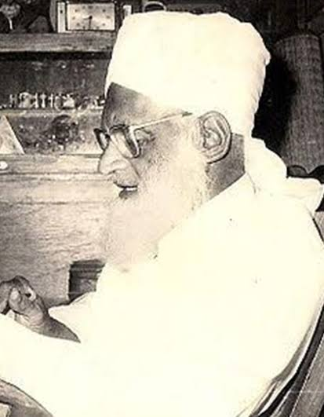

MASTER ABDUL GAFFAR SULLIA



Born in Mangalore in 1922, Abdul Gaffar Sullia was a distinguished educator, religious scholar, and polyglot. Throughout his career, he served concurrently as a school teacher and an Imam, demonstrating a profound commitment to both academic and spiritual guidance. He was also a founding member of the Sanmarga weekly publication. A highly accomplished linguist, Mr. Sullia was proficient in English, Hindi, Urdu, Arabic, Persian, Malayalam, Tulu, and Beary. He leveraged his linguistic expertise to write and translate numerous influential treatises on a wide variety of subjects. He passed away in 1998 at the age of 76.
Abdul Gaffar Sullia’s life was defined by his unwavering dedication to knowledge, faith, and community service. By bridging cultural and linguistic divides, he left behind a rich intellectual legacy. Today, his extensive body of work continues to serve as an invaluable resource for those seeking a deeper understanding of religious principles and social ethics, ensuring his influence endures for generations to come.